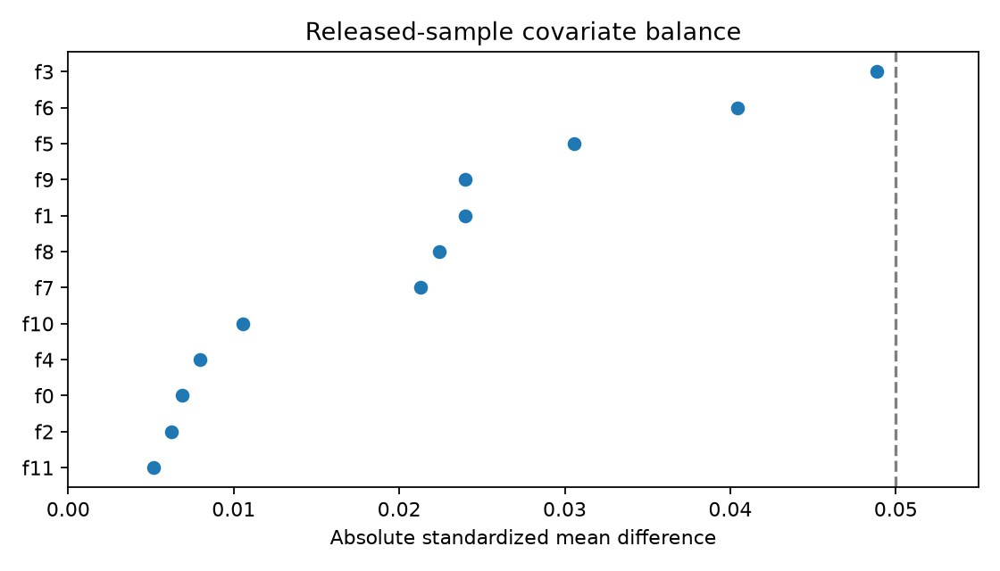
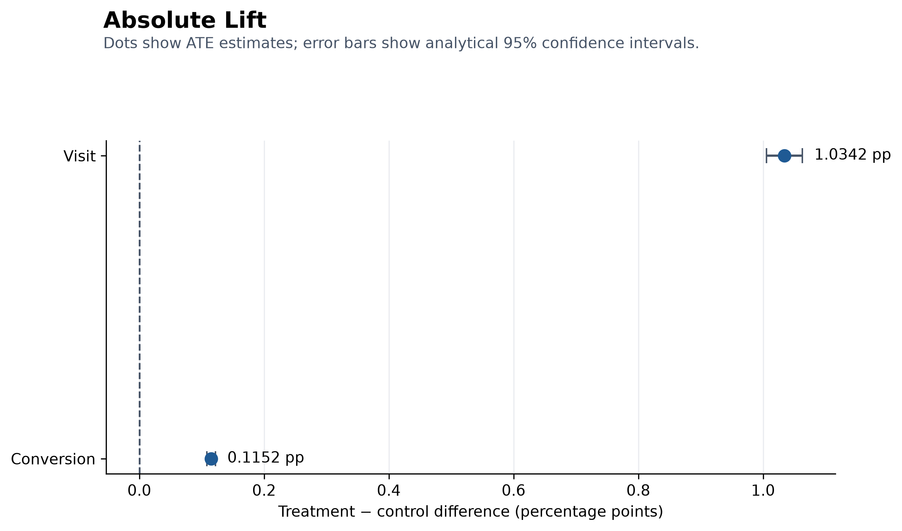
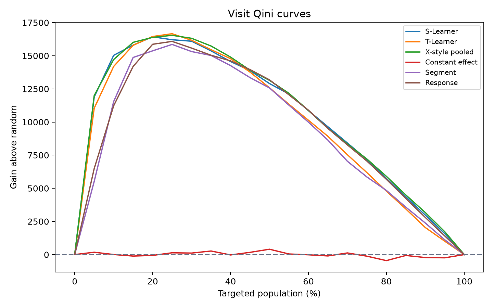
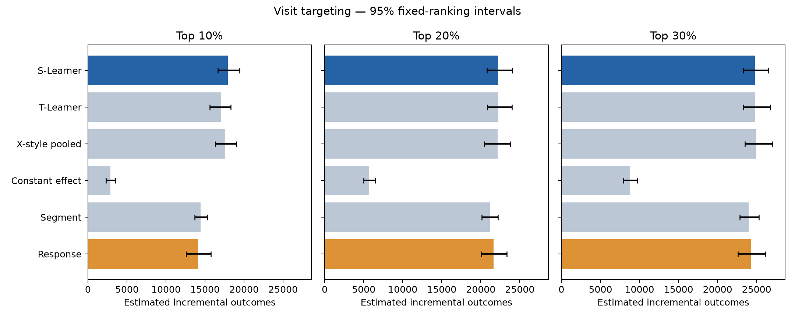
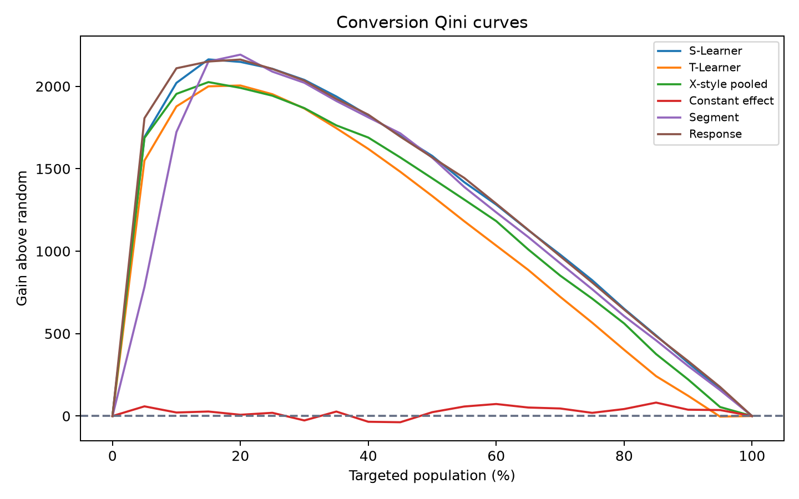
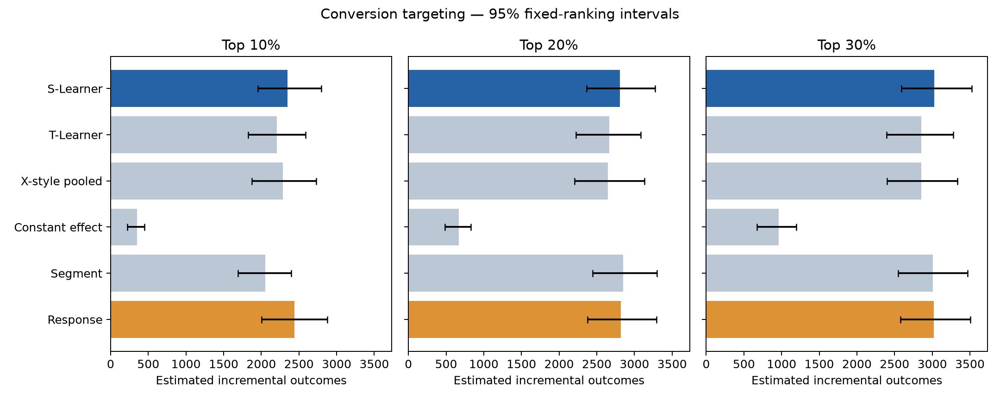

Would act anyway
Advertising may receive credit for an outcome it did not cause.
Without ad LikelyWith ad Likely
FINAL PROJECT REPORT · SEPTEMBER 2026
Advertising Incrementality
and Uplift Targeting
A reproducible benchmark analysis of randomized advertising effects, heterogeneous treatment-effect ranking, and budget-constrained targeting decisions.
WHY THIS PROJECT
Some users would Visit or Convert without advertising. Others are unlikely to respond under either condition. A stronger targeting strategy prioritizes users for whom advertising is expected to create a positive difference.
Advertising may receive credit for an outcome it did not cause.
Serving an ad is unlikely to change the observed outcome.
Treatment is expected to increase the probability of response.
Measures average causal effects, models effect variation across anonymous feature patterns, ranks records by predicted incremental response, and compares uplift targeting with simpler alternatives.
PROJECT ROADMAP
Estimate who is likely to Visit or Convert.
Establish whether advertising creates average causal lift.
Estimate whose behavior is most likely to change.
Compare against random and response baselines on held-out data.
EXECUTIVE SUMMARY
At 10% coverage, the ranking estimates 17,919 incremental visits and exceeds response targeting by 3,805 visits.
The tested uplift learners do not beat response targeting. The disadvantage is clearest at 5% and 10% coverage.
Coverage scenarios measure capacity tradeoffs. Without cost or revenue, 30% cannot be called economically optimal.
BUSINESS QUESTION
Ranks records by predicted Visit or Conversion probability.
Ranks records by the estimated difference between treated and untreated outcomes.
Decision: When advertising capacity is limited, evaluate incremental outcomes captured, not response probability alone.
DATA & EXPERIMENTAL DESIGN
Estimated by the Treatment outcome rate minus the Control outcome rate.

A/B TEST CALCULATION
n₁ = 11,882,655 Treatment records; n₀ = 2,096,937 Control records.
An aggregate counterfactual estimate among treated records.
Why no CUPED? The release has no validated pre-period outcome or time field suitable for adjustment, so the primary estimate is the unadjusted randomized difference in means.
A/B TEST RESULT

Incremental counts are aggregate counterfactual estimates among treated records.
UPLIFT MODELING
One response function using features and treatment; score each record under both treatment states and subtract.
Preferred for VisitSeparate response functions for treatment and control; allows arm-specific behavior.
ComparatorOne effect model fitted to pooled imputed-effect targets; more flexible, but not the canonical propensity-blended X-Learner.
Point-Qini leaderEVALUATION LOGIC
Treatment rate minus Control rate within the selected records.
Selected records × selected-group uplift.
Area under the cumulative-gain curve.
AUUC minus one half of the common 100% endpoint, measuring gain above random.
Bootstrap the same fixed-ranking cells so strategy differences remain paired.
A mismatch flags treatment direction, denominator, or population inconsistency.
VISIT MODEL COMPARISON

The pooled X-style learner has the highest point estimate, but its paired advantage over the simpler S-Learner is unresolved.
VISIT TARGETING DECISION
| Target | Records | Uplift | Incr. visits | Captured | Gain vs random |
|---|---|---|---|---|---|
| 5% | 139,788 | 9.535 pp | 13,329 | 46.1% | 11,884 |
| 10% | 279,575 | 6.409 pp | 17,919 | 62.0% | 15,030 |
| 20% | 559,150 | 3.972 pp | 22,208 | 76.9% | 16,429 |
| 30% | 838,725 | 2.953 pp | 24,765 | 85.7% | 16,097 |
| 40% | 1,118,300 | 2.336 pp | 26,123 | 90.4% | 14,565 |
| 50% | 1,397,875 | 1.956 pp | 27,349 | 94.7% | 12,902 |
| 75% | 2,096,812 | 1.376 pp | 28,846 | 99.8% | 7,176 |
| 100% | 2,795,749 | 1.033 pp | 28,893 | 100.0% | 0 |
Vs response: +5,400 at 5%; +3,805 at 10%; +566 unresolved at 20%; +521 positive but marginal at 30%.

CONVERSION TARGETING DECISION

| Target | S-Learner vs response | Interpretation |
|---|---|---|
| 5% | −114 (−186, −37) | Response better |
| 10% | −89 (−147, −31) | Response better |
| 20% | −15 (−56, 28) | Unresolved |
| 30% | +4 (−16, 27) | Unresolved |
CONVERSION BUDGET SCENARIOS
| Target | Records | Uplift | Incr. conv. | Captured | Gain vs random |
|---|---|---|---|---|---|
| 5% | 139,788 | 1.410 pp | 1,972 | 59.8% | 1,807 |
| 10% | 279,575 | 0.872 pp | 2,439 | 74.0% | 2,109 |
| 20% | 559,150 | 0.505 pp | 2,822 | 85.6% | 2,162 |
| 30% | 838,725 | 0.360 pp | 3,023 | 91.7% | 2,034 |
| 40% | 1,118,300 | 0.281 pp | 3,147 | 95.5% | 1,828 |
| 50% | 1,397,875 | 0.230 pp | 3,217 | 97.6% | 1,569 |
| 75% | 2,096,812 | 0.157 pp | 3,283 | 99.6% | 810 |
| 100% | 2,795,749 | 0.118 pp | 3,296 | 100.0% | 0 |
Interpretation: these estimates describe the supported response-propensity policy. Concentration in high-response records does not prove that an uplift learner improves Conversion targeting.

BUSINESS CONCLUSION
This creates an opportunity to reduce unnecessary advertising exposure or concentrate a limited budget on users whose behavior is more likely to change.
The strongest evidence is at tight coverage, where uplift ranking materially improves allocation over response targeting.
The tested uplift learners do not outperform it and are significantly worse at the 5% and 10% budgets.
Decision: use an objective-specific targeting strategy; the evidence supports uplift targeting for Visit growth, but not for Conversion.